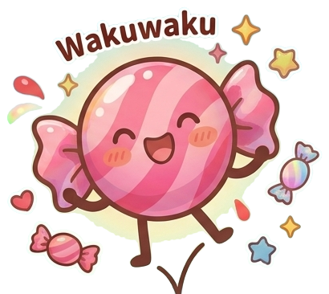

なかまが できたよ！
ルッキーを もらえた！
はじめての なかま、ルッキー。いっしょに たんけんに でかけよう。
はじめまして！なまえを つくろう
なまえと あいことばを きめると、じぶんだけの図鑑ができるよ。
もう なまえを つくった人は
※あいことばは、じぶんの図鑑をまもる ひみつのことば。わすれないでね。
テクタン
v1.0.0ようこそ、テクタンへ！
あそびに きてくれて ありがとう。これから 日本中（にっぽんじゅう）を たんけんして、まだ だれも 見（み）つけていない キャラクターの 第一発見者（だいいちはっけんしゃ）に なってね！
すべての駅で適切なルートが確保できていることを確約していません。 スポットが少なかったり、目安時間（約60分）に収まらないこともあります。気になったら別の駅も試してみてね。
探検する日時を入れると、その時間に開いていないお店や施設は結果から自動で除外します。
営業時間情報はGoogle マップが提供する情報に依存しており、 正確性を保証するものではありません。実際にお出かけする前に、お店や施設の 公式サイト・電話などで営業時間を必ずご確認ください。
2 行きたい場所を選ぼう
4 探検しながら写真を撮ろう
写真をタップでタグ付け
5 たんけんノートをつくろう
たんけんノート
たんけんを終えて思ったこと
とった写真と思い出
行った順に並べてあるよ。ノートに載せたくない写真は STEP 4 で外しておこう。 写真ごとに思ったこと・気づいたことを書きこめます（任意）。
今回であったキャラたち
ノートを書いてみて
たんけんスコア

ランキングに登録すると、同じ地域で探検した他の人と点数を比べられます。
ランキング (上位10名)
なかまを さがしてるよ…
どの なかまに する？
かげを よく見て、ひとつ えらんでね
あたらしい なかま とうじょう！
なまえを えらんでね
育てる（仮）
作成中つかまえた なかまを おうちで そだてられる、あたらしい あそびを じゅんびしているよ。
目標は 100人！ みんなで あそべる日を めざしてるよ。
100人いじょうの お友だちが あそんでくれる頃に できあがるよ。お友だちを さそって、はやく 解放しよう！
ほうこく・おといあわせ
こまったこと・へんなキャラ・けしてほしいことを おしえてね。
あたらしい なかまが つくれそう！
どんなのが すき？ えらぶと その子に ちかづくよ（あとで 発見できるよ）
いまどこ？
いまの場所をさがしているよ…
青い矢印が「あなた」だよ。矢印のむきが、いま向いている方向。
タグをつける
この写真を撮った場所を選んでね（任意）。
この写真にひと言メモ
マイクボタンを押して、気づいたことを声で話してみよう。あとから書き直してもOK。
3 探検マップを確認しよう
キャラずかん
ぼうけんの履歴
マスターモード（admin）
確率で決まる要素を固定してチェックできます。設定はこの端末に保存され、adminアカウントでのみ有効です。
※「出すキャラ／すがた」を指定すると、次にARで探すとき必ずそれが出ます。「（ステージ通常）／（ランダム）」で通常に戻ります。
🧪 最終テスト（順番チェックリスト）
上から順番に「やること」を実施し、「確認」を見て OK / NG を付けてください。全項目を判定すると最終テスト完了です。進捗はこの端末に保存されます。